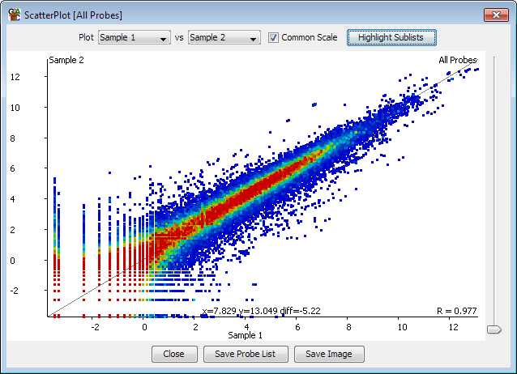
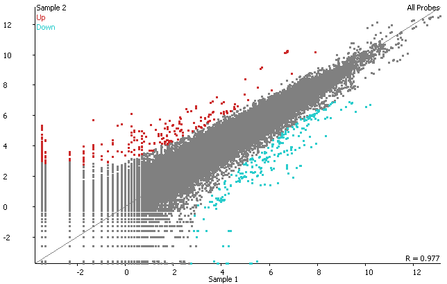

The scatter plot allows you to look at the correlation between two data stores for the currently selected probe list. It creates a 2-dimensional plot with a point for each probe, showing the relationship between the quantitated values in the two selected datastores.

From the panel at the top of the plot you can select the two datastores you would like to plot. Both of these stores need to be quantitated. The plot will update as soon as you select a new data store.
By default the x and y axes of the plot will use the same scale which will be sufficient to completely scale both data stores. Probes which have the same values in both data stores will therefore appear on a diagonal line running from the bottom left to the top right of the plot. If you untick the box which says "Common Scale" then each axis will be scaled independently which should make the plot fill the available space more efficiently, but would make comparisons of the values in the two distributions more difficult.
You can use the slider on the right of the plot to adjust the size of each of the points in the plot which may make things clearer for densely or sparsely packed plots.
The default view on the scatterplot colours the points by the density of probes which fell into that part of the plot. An alternate view allows you to colour the plot by picking one or more sublists of the probe list you're plotting. In this case the probes for each sublist will be given a different colour and probes not contained in any sublists will be coloured grey.

At the bottom of the plot you can see the Pearson correlation value for the two datasets you are viewing. You can also see the current values which would fall under the current cursor position.
You can use the scatterplot to generate a filtered list of probes. To select a set of probes you can simply drag within the plot. The selected probes will turn black. To save the list of selected probes use the "Save Probe List" button at the bottom of the plot and the new list will be added to your probe list folder.